Kervidy–Naizin · Morbihan (56) · 2026 practical
Estimate cropping suitability using the supplied soil, texture, terrain and land-use layers. Follow a transparent decision chain from raw codes to six suitability classes, then calculate class areas, affected constraints and land-use proportions. Every displayed figure and numerical result was produced by running the supplied R code.
The workflow implements Estimation of soil cropping suitability — Guidelines 2026, adapted from Bruckert (1989), together with the supplied four-criteria glossary. Sources, assumptions and input inventory.
Complete R script · Suitability raster · Class areas · Constraint areas · Land-use table
Run from the repository root
Install terra once with install.packages("terra") (help). Then run source("scripts/09-case-studies.R"). To regenerate the figures and console results, run source("scripts/09-render-blocks.R"). All necessary inputs are included in the chapter archive.
Teaching references: 2026 lab guide · Four-criteria glossary · Bruckert (1989), provided scan.
The classification rule
Class I represents the highest generic cropping suitability; class VI the lowest. Climate is assumed optimal and uniform. The depth × hydromorphy table establishes the base class:
| Onset of hydromorphy | Depth >60 cm | 40< depth ≤60 cm | Depth ≤40 cm |
|---|---|---|---|
| >80 cm or none | I | II | IV |
| 40< onset ≤80 cm | III | IV | V |
| Onset ≤40 cm | IV | V | VI |
Add one class for a 10–15% slope, one for an unbalanced texture and one for surface stones >15%, capping the result at VI. A slope >15% assigns VI directly. Exactly 10% and 15% are included in the one-class slope band.
9.1 · Locate the real case study and inspect its codes
Map cropping suitability in Kervidy–Naizin, Morbihan (56), using the supplied 2026 exercise and real input layers. Climate is assumed uniform and optimal within this educational model.
R code
library(terra)
p <- "data/vectors/module-09/naizin-case-study.gpkg"
basin <- vect(p, layer = "catchment")
soils <- vect(p, layer = "soils")
landuse <- vect(p, layer = "Landuse2013")
texture <- rast("data/rasters/module-09/texture-classes-5m.tif")
dem <- rast("data/rasters/module-09/elevation-5m.tif")
stopifnot(same.crs(basin, soils), same.crs(basin, texture), same.crs(texture, dem),
all(res(texture) == 5), all(res(dem) == 5))
for (field in c("HYDROMORPH", "DEPTH", "GRAVEL")) print(table(as.data.frame(soils)[[field]], useNA = "always"))
plot(basin, col = "#edf0e9", main = "Kervidy–Naizin: soil mapping units", axes = TRUE)
lines(soils, col = "#6e8272", lwd = .6)
sbar(1000, type = "bar", below = "1 km", labels = c("", "", ""))Why these functions? · official R help
all()— Require every checked value to satisfy the numerical condition. In R:help("all", package="base")as.data.frame()— Export the field attributes as a plain table. In R:help("as.data.frame", package="base")c()— Collect related values, plotting settings or raster layers. In R:help("c", package="base")library()— Load sf for vectors, terra for grids and gstat for variography and interpolation. In R:help("library", package="base")lines()— Draw the catchment outline over each map. In R:help("lines", package="graphics")plot()— Display maps, fitted variograms, histograms or validation diagnostics using the relevant class method. In R:help("plot", package="graphics")print()— Expose fitted parameters and computed numerical results rather than hiding them. In R:help("print", package="base")rast()— Create a 25 m prediction template or reopen an exported GeoTIFF. In R:help("rast", package="terra")res()— Verify the supplied 5 m input cell size. In R:help("res", package="terra")same.crs()— Check that the catchment, soil, DEM and texture share a spatial reference system. In R:help("same.crs", package="terra")sbar()— Draw a 1 km ground-distance scale bar for the projected maps. In R:help("sbar", package="terra")stopifnot()— Stop the analysis when geometry or numerical checks fail. In R:help("stopifnot", package="base")table()— Count the raw soil attribute codes, including missing values, before decoding. In R:help("table", package="base")vect()— Convert sf features to terra vectors for masking, plotting and field summaries. In R:help("vect", package="terra")
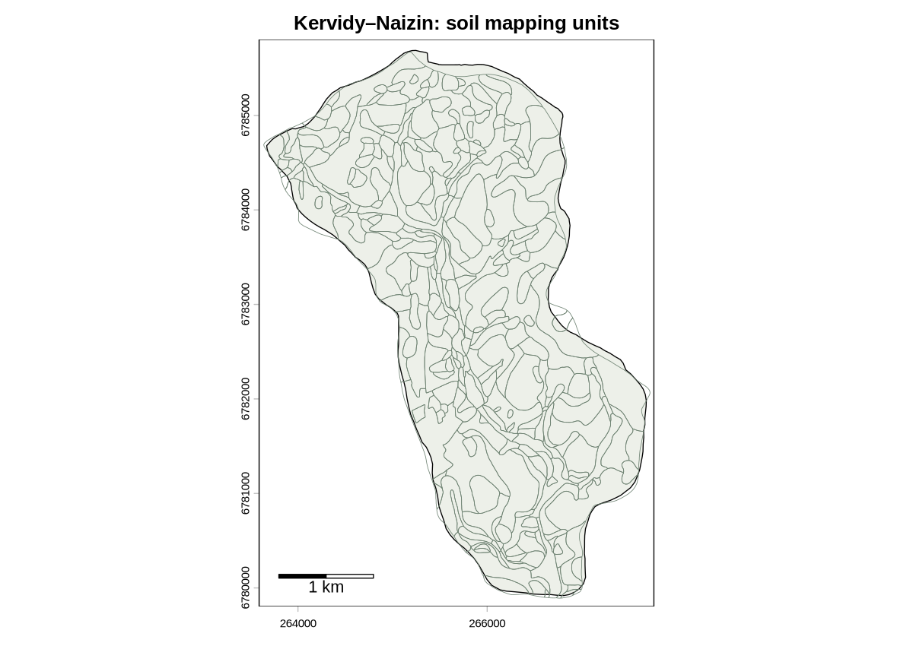
Executed R console output
. 1 3 4 5 6 7 8 <NA> 105 11 72 14 33 40 19 5 5 1 2 3 4 5 <NA> 46 70 90 70 23 5 r x <NA> 1 8 295
The classified domain is the supplied catchment, approximately 1207 ha. The classification is adapted from Bruckert (1989) as specified in the 2026 lab guide; it is not a universal crop-yield prediction or a regulatory zoning. Preserve these data at Naizin rather than relocating them to department 35. Soil, elevation and land-use layers do not necessarily describe the same acquisition date.
9.2 · Decode depth, hydromorphy and stoniness explicitly
Use the separate attribute fields and the four-criteria glossary. Do not infer centimetres from the digits of the concatenated LABEL field.
R code
d <- as.data.frame(soils)
depth_lookup <- c("1" = 1, "2" = 1, "3" = 1, "4" = 2, "5" = 3, "6" = 3)
hydro_lookup <- c("." = 1, "0" = 1, "1" = 1, "2" = 1,
"3" = 2, "4" = 2, "5" = 3, "6" = 3, "7" = 3, "9" = 3)
soils$depth_group <- unname(depth_lookup[d$DEPTH])
soils$hydro_group <- unname(hydro_lookup[d$HYDROMORPH])
shallow_contact <- which(d$HYDROMORPH == "3" & d$DEPTH %in% c("5", "6"))
soils$hydro_group[shallow_contact] <- 3
soils$stone_penalty <- ifelse(is.na(soils$depth_group), NA, as.integer(!is.na(d$GRAVEL) & nzchar(trimws(d$GRAVEL))))
class_matrix <- matrix(c(1, 2, 4, 3, 4, 5, 4, 5, 6), nrow = 3, byrow = TRUE)
soils$base_class <- class_matrix[cbind(soils$hydro_group, soils$depth_group)]
print(class_matrix)
print(d[d$HYDROMORPH %in% "8", c("LABEL", "HYDROMORPH", "DEPTH")])
print(data.frame(shallow_contact_units = length(shallow_contact), unresolved_code8_units = sum(d$HYDROMORPH %in% "8")))
base_display <- soils
base_display$base_label <- factor(base_display$base_class, levels = 1:6, labels = c("I", "II", "III", "IV", "V", "VI"))
plot(base_display, "base_label", main = "Depth × hydromorphy: base class", col = c("#287d4d", "#78aa59", "#ced479", "#eac169", "#d27a48", "#a83e42"))
lines(basin)Why these functions? · official R help
as.data.frame()— Export the field attributes as a plain table. In R:help("as.data.frame", package="base")as.integer()— Convert the recorded presence of an above-threshold stone indicator to a penalty. In R:help("as.integer", package="base")c()— Collect related values, plotting settings or raster layers. In R:help("c", package="base")cbind()— Index that table with each soil unit’s hydromorphy row and depth column. In R:help("cbind", package="base")data.frame()— Present computed model diagnostics and error metrics as tables. In R:help("data.frame", package="base")factor()— Label base suitability classes I–VI in their correct order. In R:help("factor", package="base")ifelse()— Leave stone penalties missing where no soil-depth description exists. In R:help("ifelse", package="base")is.na()— Keep unknown soil descriptions, code-8 uncertainty and raster gaps visible. In R:help("is.na", package="base")length()— Count shallow-contact units and define a separate missing-land-use category. In R:help("length", package="base")lines()— Draw the catchment outline over each map. In R:help("lines", package="graphics")matrix()— Encode the nine depth-by-hydromorphy base classes exactly as the supplied table. In R:help("matrix", package="base")nzchar()— Distinguish a recorded gravel material code from an empty field. In R:help("nzchar", package="base")plot()— Display maps, fitted variograms, histograms or validation diagnostics using the relevant class method. In R:help("plot", package="graphics")print()— Expose fitted parameters and computed numerical results rather than hiding them. In R:help("print", package="base")sum()— Count flagged soil units or total the class areas for the area-conservation check. In R:help("sum", package="base")trimws()— Remove accidental surrounding spaces before interpreting a gravel indicator. In R:help("trimws", package="base")unname()— Keep numeric lookup results without carrying the original code names. In R:help("unname", package="base")which()— Locate shallow soil units whose mottles occur at the parent-material contact. In R:help("which", package="base")
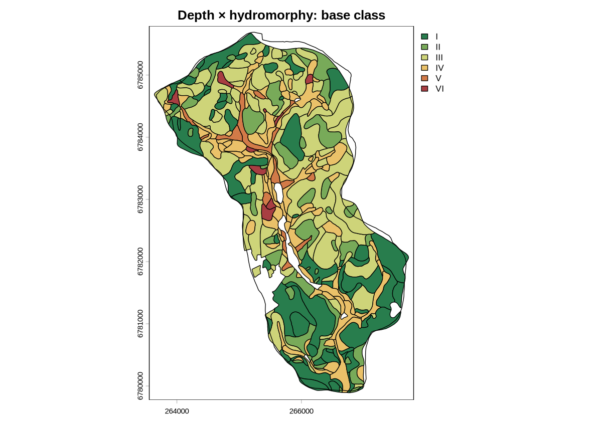
Executed R console output
[,1] [,2] [,3]
[1,] 1 2 4
[2,] 3 4 5
[3,] 4 5 6
LABEL HYDROMORPH DEPTH
157 V8V4 8 4
177 ZH8V3 8 3
187 ZVx8V3 8 3
240 V8V2 8 2
264 V8V2 8 2
shallow_contact_units unresolved_code8_units
1 1 5
Depth codes 1–3 mean >60 cm, code 4 means 40–60 cm and codes 5–6 mean ≤40 cm. Hydro groups are >80 cm/no hydromorphy, 40–80 cm and ≤40 cm. For shallow soils, code 3 means mottles at the soil–parent-material contact: one unit with depth code 5 is therefore placed in the ≤40 cm group. Code 8 lacks an exact onset depth and remains unresolved in the primary map. A gravel material code signals >15% surface stones under the glossary convention; a blank means no above-threshold indicator recorded, not a measured 0% stone content.
9.3 · Prepare one common 5 m grid
Rasterise each decoded soil attribute onto the texture grid. Keep missing values explicit and restrict all outputs to the catchment.
R code
domain <- mask(init(texture, 1), basin, touches = FALSE)
template <- domain
texture <- mask(texture, domain)
base <- mask(rasterize(soils, template, field = "base_class"), domain)
depth_group <- mask(rasterize(soils, template, field = "depth_group"), domain)
hydro_group <- mask(rasterize(soils, template, field = "hydro_group"), domain)
stone <- mask(rasterize(soils, template, field = "stone_penalty"), domain)
print(freq(texture))
depth_display <- as.factor(depth_group)
levels(depth_display) <- data.frame(ID = 1:3, depth = c(">60 cm", "40–60 cm", "≤40 cm"))
plot(depth_display, col = c("#659765", "#d2b166", "#ad6251"), all_levels = TRUE,
main = "Soil depth groups")
lines(basin)
hydro_display <- as.factor(hydro_group)
levels(hydro_display) <- data.frame(ID = 1:3, onset = c(">80 cm / none", "40–80 cm", "≤40 cm"))
plot(hydro_display, col = c("#e0d79c", "#76aaa8", "#346f9d"), all_levels = TRUE,
main = "Onset of hydromorphy")
lines(basin)Why these functions? · official R help
as.factor()— Display numerical raster codes as labelled categories rather than continuous values. In R:help("as.factor", package="base")c()— Collect related values, plotting settings or raster layers. In R:help("c", package="base")data.frame()— Present computed model diagnostics and error metrics as tables. In R:help("data.frame", package="base")freq()— Count cells carrying each supplied texture code or penalty indicator. In R:help("freq", package="terra")init()— Create a constant-value domain template while retaining the input grid. In R:help("init", package="terra")levels()— Attach the explicit decision-rule labels to each categorical raster map. In R:help("levels", package="terra")lines()— Draw the catchment outline over each map. In R:help("lines", package="graphics")mask()— Restrict all criteria and class outputs to the catchment domain. In R:help("mask", package="terra")plot()— Display maps, fitted variograms, histograms or validation diagnostics using the relevant class method. In R:help("plot", package="graphics")print()— Expose fitted parameters and computed numerical results rather than hiding them. In R:help("print", package="base")rasterize()— Transfer polygon attributes to the common 5 m grid by cell-centre assignment. In R:help("rasterize", package="terra")
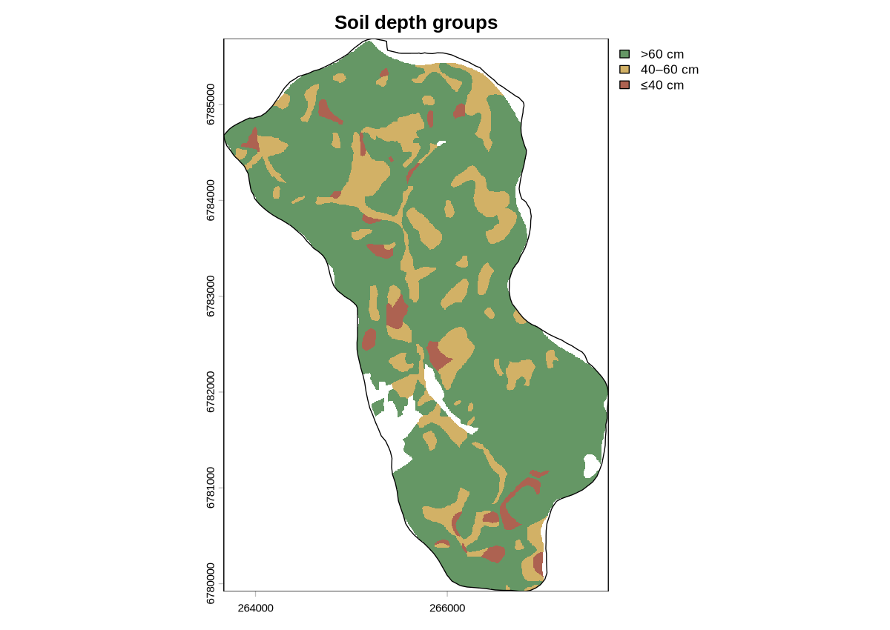
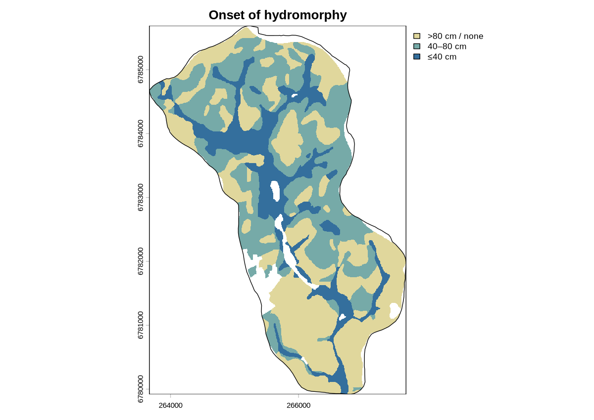
Executed R console output
layer value count 1 1 4 754 2 1 5 780 3 1 7 30611 4 1 8 64843 5 1 11 41704 6 1 12 344250
Rasterisation assigns polygon attributes to cell centres. It does not create new soil observations at 5 m intervals. Small polygons, boundaries and gaps can change the rasterised area slightly. The grid also provides a common support for the final class and land-use cross-tabulation.
9.4 · Calculate slope in percent, then align it
The exercise uses 10% and 15% thresholds. Derive slope on the supplied buffered 5 m DEM before resampling onto the texture grid.
R code
slope_degrees <- terrain(dem, v = "slope", unit = "degrees", neighbors = 8)
slope_percent_native <- 100 * tan(slope_degrees * pi / 180)
slope_percent <- mask(resample(slope_percent_native, template, method = "bilinear"), domain)
names(slope_percent) <- "slope_percent"
stopifnot(compareGeom(slope_percent, texture))
slope_penalty <- ifel(slope_percent >= 10 & slope_percent <= 15, 1, 0)
steep <- slope_percent > 15
print(global(slope_percent, c("min", "mean", "max"), na.rm = TRUE))
plot(slope_percent, col = hcl.colors(100, "YlOrRd", rev = TRUE), main = "Slope (%) — not degrees")
lines(basin)
slope_band <- ifel(steep, 2, slope_penalty)
slope_band <- as.factor(slope_band)
levels(slope_band) <- data.frame(ID = 0:2, rule = c("<10%: no penalty", "10–15%: +1 class", ">15%: class VI"))
plot(slope_band, col = c("#dce6d5", "#dfb761", "#b34c42"), all_levels = TRUE, main = "Slope decision rule")
lines(basin)Why these functions? · official R help
as.factor()— Display numerical raster codes as labelled categories rather than continuous values. In R:help("as.factor", package="base")c()— Collect related values, plotting settings or raster layers. In R:help("c", package="base")compareGeom()— Verify that the reopened GeoTIFF retains the prediction grid. In R:help("compareGeom", package="terra")data.frame()— Present computed model diagnostics and error metrics as tables. In R:help("data.frame", package="base")global()— Summarise all valid raster cells, with missing cells excluded. In R:help("global", package="terra")hcl.colors()— Choose perceptually organised sequential and diverging map colours. In R:help("hcl.colors", package="grDevices")ifel()— Hide aspect values where slope is exactly zero. In R:help("ifel", package="terra")levels()— Attach the explicit decision-rule labels to each categorical raster map. In R:help("levels", package="terra")lines()— Draw the catchment outline over each map. In R:help("lines", package="graphics")mask()— Restrict all criteria and class outputs to the catchment domain. In R:help("mask", package="terra")names()— Name outputs with their numerical meaning and units. In R:help("names", package="base")plot()— Display maps, fitted variograms, histograms or validation diagnostics using the relevant class method. In R:help("plot", package="graphics")print()— Expose fitted parameters and computed numerical results rather than hiding them. In R:help("print", package="base")resample()— Align continuous slope percentages to the texture grid with bilinear interpolation. In R:help("resample", package="terra")stopifnot()— Stop the analysis when geometry or numerical checks fail. In R:help("stopifnot", package="base")tan()— Convert slope angle to percent grade using 100 × tan(angle). In R:help("tan", package="base")terrain()— Derive slope, aspect and local terrain indices from elevation. In R:help("terrain", package="terra")
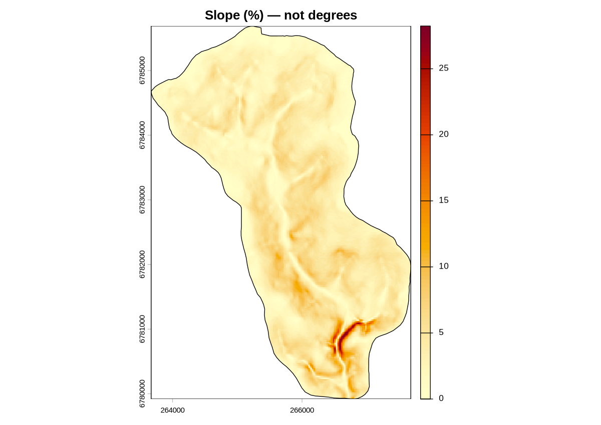
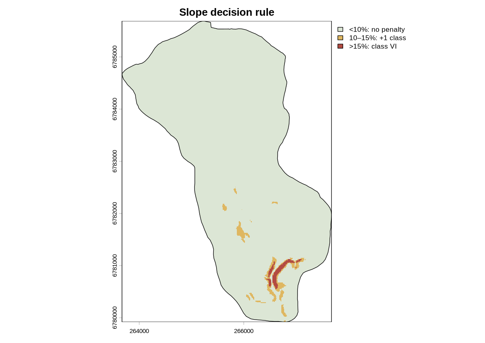
Executed R console output
min mean max slope_percent 0 4.044696 28.30953
Exactly 10% and exactly 15% enter the one-class penalty band; only >15% forces class VI. This explicit convention closes the boundary gap in the wording of the guide. Bilinear resampling is used for continuous slope, never for soil or texture class codes. Slope is computed before resampling to preserve the stated derivation order.
9.5 · Apply texture and surface-stone penalties
Balanced GEPPA textures in the guide are LAS, Sal, Lsa, L and Ls: raster codes 7, 10, 11, 12 and 16.
R code
balanced_codes <- c(7, 10, 11, 12, 16)
texture_penalty <- ifel(is.na(texture), NA, ifel(texture %in% balanced_codes, 0, 1))
texture_display <- as.factor(texture_penalty)
levels(texture_display) <- data.frame(ID = 0:1, rule = c("Balanced: no penalty", "Unbalanced: +1 class"))
plot(texture_display, col = c("#d7e5cc", "#ca9256"), all_levels = TRUE, main = "Texture constraint")
lines(basin)
stone_display <- as.factor(stone)
levels(stone_display) <- data.frame(ID = 0:1, rule = c("No >15% indicator recorded", "Surface stones >15%: +1 class"))
plot(stone_display, col = c("#e2e7dd", "#986f59"), all_levels = TRUE, main = "Surface-stone constraint")
lines(basin)
print(freq(texture_penalty))
print(freq(stone))Why these functions? · official R help
as.factor()— Display numerical raster codes as labelled categories rather than continuous values. In R:help("as.factor", package="base")c()— Collect related values, plotting settings or raster layers. In R:help("c", package="base")data.frame()— Present computed model diagnostics and error metrics as tables. In R:help("data.frame", package="base")freq()— Count cells carrying each supplied texture code or penalty indicator. In R:help("freq", package="terra")ifel()— Hide aspect values where slope is exactly zero. In R:help("ifel", package="terra")is.na()— Keep unknown soil descriptions, code-8 uncertainty and raster gaps visible. In R:help("is.na", package="base")levels()— Attach the explicit decision-rule labels to each categorical raster map. In R:help("levels", package="terra")lines()— Draw the catchment outline over each map. In R:help("lines", package="graphics")plot()— Display maps, fitted variograms, histograms or validation diagnostics using the relevant class method. In R:help("plot", package="graphics")print()— Expose fitted parameters and computed numerical results rather than hiding them. In R:help("print", package="base")
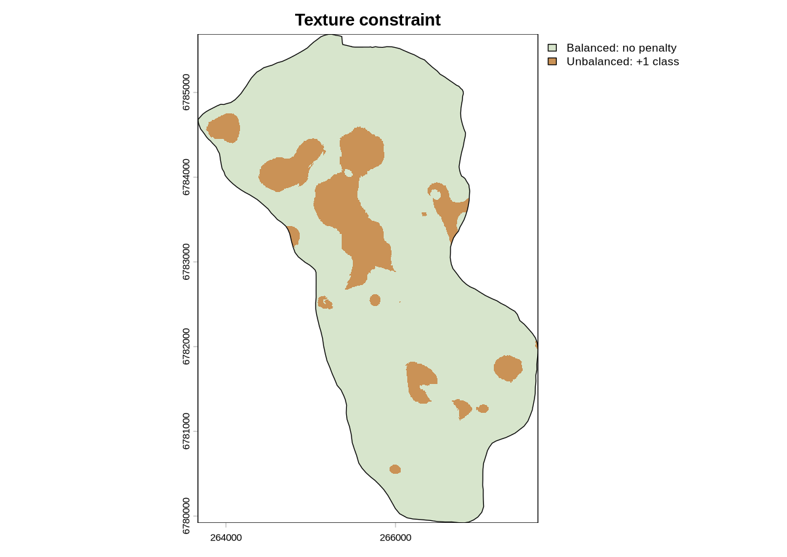
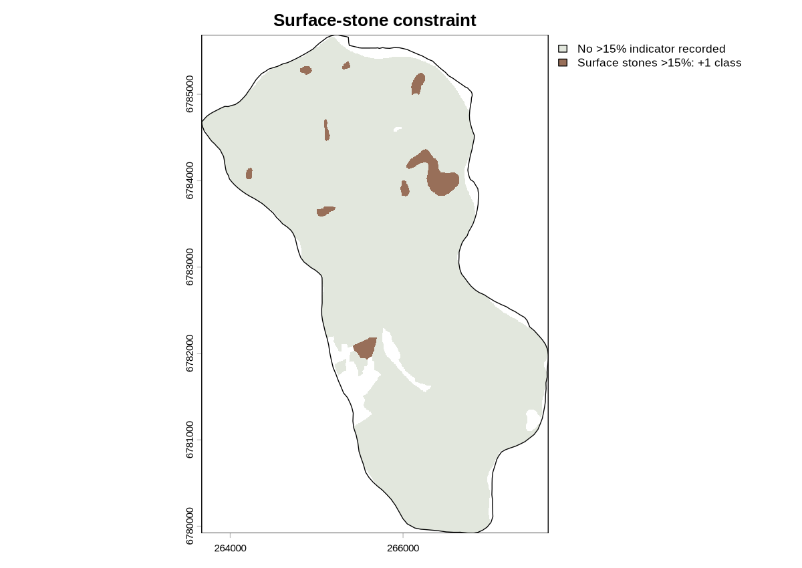
Executed R console output
layer value count 1 1 0 416565 2 1 1 66377 layer value count 1 1 -2147483648 14052 2 1 0 446213 3 1 1 10638
Texture is not ranked by clay percentage alone: use the exact balanced-texture list given by the exercise. The surface-stone indicator is based on the dedicated GRAVEL field. Each applicable penalty adds one class and the result is capped at VI. These are separate constraints and can overlap spatially.
9.6 · Combine the rules and preserve unresolved zones
Apply the base matrix, add the three penalties, cap at VI and apply the >15% slope override. Keep unresolved code-8 hydromorphy unclassified, then explore the three possible onset groups.
R code
suitability <- ifel(steep, 6, clamp(base + slope_penalty + texture_penalty + stone, upper = 6, values = TRUE))
names(suitability) <- "cropping_suitability_class"
class_colours <- c("#287d4d", "#78aa59", "#ced479", "#eac169", "#d27a48", "#a83e42")
class_labels <- c("I", "II", "III", "IV", "V", "VI")
map_classes <- as.factor(ifel(!is.na(domain), ifel(is.na(suitability), 0, suitability), NA))
levels(map_classes) <- data.frame(ID = 0:6, suitability = c("Unclassified / non-soil / missing", class_labels))
plot(map_classes, col = c("#c7cbd0", class_colours), all_levels = TRUE,
main = "Cropping suitability: primary interpretation")
lines(basin)
sbar(1000, type = "bar", below = "1 km", labels = c("", "", ""))
ambiguous <- mask(rasterize(soils, template, field = as.integer(d$HYDROMORPH %in% "8")), domain)
area_ha <- cellSize(domain, unit = "ha", mask = TRUE)
scenario_summary <- data.frame()
for (h in 1:3) {
scenario_soils <- soils
hg <- scenario_soils$hydro_group
hg[d$HYDROMORPH %in% "8"] <- h
scenario_soils$base_class <- class_matrix[cbind(hg, scenario_soils$depth_group)]
scenario_base <- mask(rasterize(scenario_soils, template, field = "base_class"), domain)
scenario_class <- ifel(steep, 6, clamp(scenario_base + slope_penalty + texture_penalty + stone, upper = 6, values = TRUE))
z <- zonal(ifel(ambiguous == 1, area_ha, NA), scenario_class, "sum", na.rm = TRUE)
names(z) <- c("class", "area_ha")
z$area_ha[is.na(z$area_ha)] <- 0
z$assumed_hydro_group_for_code8 <- h
scenario_summary <- rbind(scenario_summary, z)
}
print(scenario_summary)
write.csv(scenario_summary, "outputs/module-09/code8-sensitivity.csv", row.names = FALSE)Why these functions? · official R help
as.factor()— Display numerical raster codes as labelled categories rather than continuous values. In R:help("as.factor", package="base")as.integer()— Convert the recorded presence of an above-threshold stone indicator to a penalty. In R:help("as.integer", package="base")c()— Collect related values, plotting settings or raster layers. In R:help("c", package="base")cbind()— Index that table with each soil unit’s hydromorphy row and depth column. In R:help("cbind", package="base")cellSize()— Compute cell areas in hectares for area accounting. In R:help("cellSize", package="terra")clamp()— Cap accumulated class penalties at class VI. In R:help("clamp", package="terra")data.frame()— Present computed model diagnostics and error metrics as tables. In R:help("data.frame", package="base")ifel()— Hide aspect values where slope is exactly zero. In R:help("ifel", package="terra")is.na()— Keep unknown soil descriptions, code-8 uncertainty and raster gaps visible. In R:help("is.na", package="base")levels()— Attach the explicit decision-rule labels to each categorical raster map. In R:help("levels", package="terra")lines()— Draw the catchment outline over each map. In R:help("lines", package="graphics")mask()— Restrict all criteria and class outputs to the catchment domain. In R:help("mask", package="terra")names()— Name outputs with their numerical meaning and units. In R:help("names", package="base")plot()— Display maps, fitted variograms, histograms or validation diagnostics using the relevant class method. In R:help("plot", package="graphics")print()— Expose fitted parameters and computed numerical results rather than hiding them. In R:help("print", package="base")rasterize()— Transfer polygon attributes to the common 5 m grid by cell-centre assignment. In R:help("rasterize", package="terra")rbind()— Append scenario and constraint summaries into exportable tables. In R:help("rbind", package="base")sbar()— Draw a 1 km ground-distance scale bar for the projected maps. In R:help("sbar", package="terra")write.csv()— Export validation metrics and field attributes for further inspection. In R:help("write.csv", package="utils")zonal()— Sum cell areas by suitability class or by a combined suitability–land-use category. In R:help("zonal", package="terra")
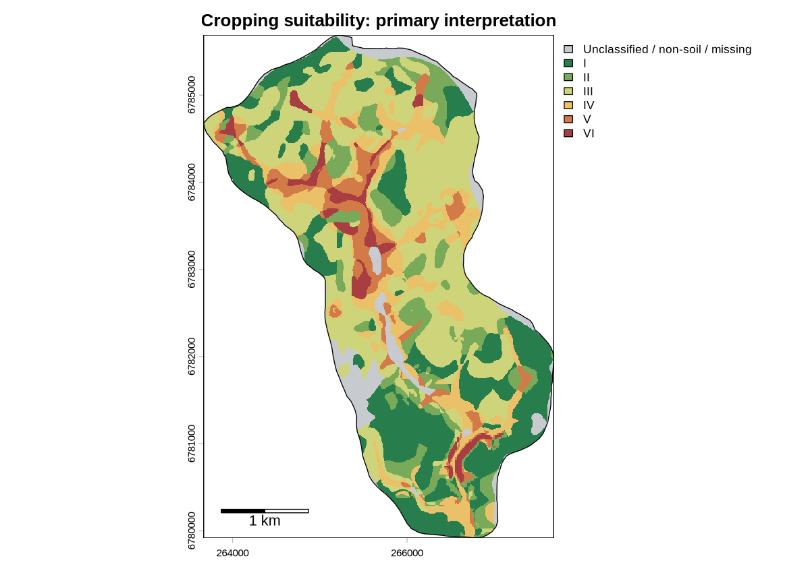
Executed R console output
class area_ha assumed_hydro_group_for_code8 1 1 4.092537 1 2 2 0.453056 1 3 3 3.331573 1 4 4 0.000000 1 5 5 0.000000 1 6 6 0.000000 1 7 1 0.000000 2 8 2 0.000000 2 9 3 4.092537 2 10 4 0.453056 2 11 5 3.331573 2 12 6 0.000000 2 13 1 0.000000 3 14 2 0.000000 3 15 3 0.000000 3 16 4 4.092537 3 17 5 0.453056 3 18 6 3.331573 3
Grey areas are reported rather than silently filled. They include incomplete soil descriptions, non-soil units, gaps and the unresolved hydromorphy-8 units; missing texture can also prevent classification. The sensitivity table changes only the assumed onset group for code 8. Its scenarios are not extra observations. Steep cells can still be assigned VI where the slope rule alone is sufficient.
9.7 · Quantify areas and overlapping constraints
Account for the entire catchment raster, including unclassified cells. For each constraint report both affected and assessed area.
R code
class_numeric <- ifel(!is.na(domain), ifel(is.na(suitability), 0, suitability), NA)
class_area <- zonal(area_ha, class_numeric, "sum", na.rm = TRUE)
names(class_area) <- c("class", "area_ha")
class_area$percent_domain <- 100 * class_area$area_ha / sum(class_area$area_ha)
print(class_area)
flags <- list(hydromorphy = hydro_group > 1, depth_le_60cm = depth_group > 1,
texture = texture_penalty == 1, stones = stone == 1, slope_ge_10pct = slope_percent >= 10)
constraint_area <- data.frame()
for (n in names(flags)) {
f <- flags[[n]]
a <- global(ifel(f, area_ha, 0), "sum", na.rm = TRUE)[1, 1]
assessed <- global(ifel(!is.na(f), area_ha, 0), "sum", na.rm = TRUE)[1, 1]
constraint_area <- rbind(constraint_area, data.frame(constraint = n, affected_ha = a, assessed_ha = assessed))
}
print(constraint_area)
stopifnot(abs(sum(class_area$area_ha) - global(area_ha, "sum", na.rm = TRUE)[1, 1]) < 1e-6)
barplot(class_area$area_ha, names.arg = c("Unclassified", class_labels)[class_area$class + 1],
col = c("#c7cbd0", class_colours)[class_area$class + 1], ylab = "Area (ha)", main = "Area by suitability class", las = 2)
barplot(constraint_area$affected_ha, names.arg = c("Hydromorphy", "Depth ≤60", "Texture", "Stones", "Slope ≥10%"),
col = "#94764e", ylab = "Affected area (ha)", main = "Constraints can overlap", las = 2)
write.csv(class_area, "outputs/module-09/class-areas.csv", row.names = FALSE)
write.csv(constraint_area, "outputs/module-09/constraint-areas.csv", row.names = FALSE)Why these functions? · official R help
abs()— Calculate absolute residuals and symmetric difference-map limits. In R:help("abs", package="base")barplot()— Compare class areas, constraint areas and land-use proportions. In R:help("barplot", package="graphics")c()— Collect related values, plotting settings or raster layers. In R:help("c", package="base")data.frame()— Present computed model diagnostics and error metrics as tables. In R:help("data.frame", package="base")global()— Summarise all valid raster cells, with missing cells excluded. In R:help("global", package="terra")ifel()— Hide aspect values where slope is exactly zero. In R:help("ifel", package="terra")is.na()— Keep unknown soil descriptions, code-8 uncertainty and raster gaps visible. In R:help("is.na", package="base")list()— Keep OK and IDW error vectors together for consistent comparison. In R:help("list", package="base")names()— Name outputs with their numerical meaning and units. In R:help("names", package="base")print()— Expose fitted parameters and computed numerical results rather than hiding them. In R:help("print", package="base")rbind()— Append scenario and constraint summaries into exportable tables. In R:help("rbind", package="base")stopifnot()— Stop the analysis when geometry or numerical checks fail. In R:help("stopifnot", package="base")sum()— Count flagged soil units or total the class areas for the area-conservation check. In R:help("sum", package="base")write.csv()— Export validation metrics and field attributes for further inspection. In R:help("write.csv", package="utils")zonal()— Sum cell areas by suitability class or by a combined suitability–land-use category. In R:help("zonal", package="terra")
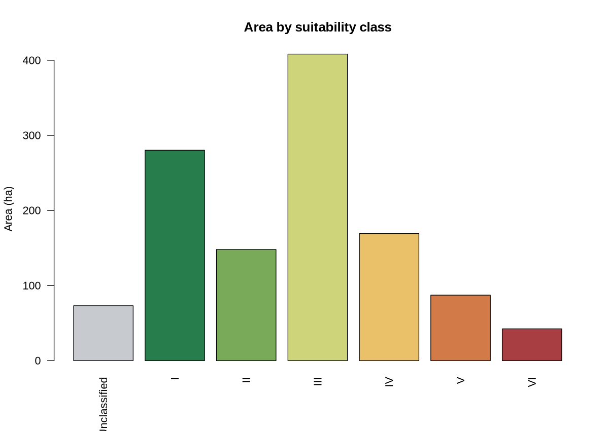
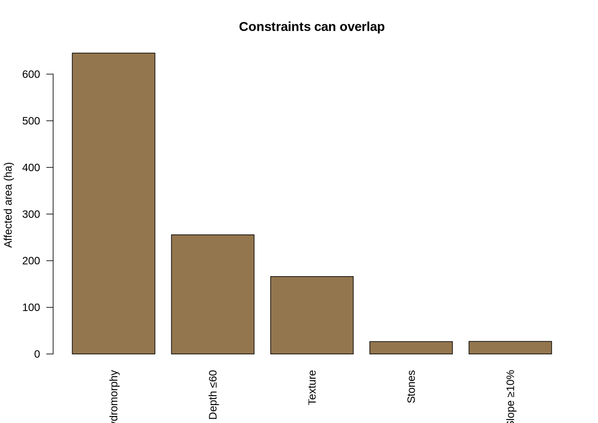
Executed R console output
class area_ha percent_domain
1 0 73.18466 6.054155
2 1 280.24937 23.183452
3 2 148.13134 12.254072
4 3 408.28781 33.775351
5 4 169.21453 13.998165
6 5 87.30909 7.222590
7 6 42.45684 3.512215
constraint affected_ha assessed_ha
1 hydromorphy 645.13704 1135.649
2 depth_le_60cm 255.51730 1143.526
3 texture 166.14517 1208.834
4 stones 26.62737 1178.700
5 slope_ge_10pct 27.06855 1208.834
Class areas form a partition when the unclassified category is included; affected-constraint areas do not, because a cell may have multiple constraints. Assessed area differs between criteria where inputs are missing. Cell areas are computed in hectares, not inferred from the frequency count without unit conversion. Raster and vector catchment area may differ slightly at the boundary.
9.8 · Cross suitability with actual land use
Use TYPE codes for land-use categories. IEA2013 is not a land-use class and must not replace TYPE in the cross-tabulation.
R code
landuse_names <- c(A = "Oilseed crops", C = "Cereals", E = "Grassland", F = "Orchard", J = "Fallow",
L = "Vegetables", M = "Maize", W = "Woodland", X = "Artificial surfaces", Z = "Water", O = "Unknown")
landuse$use_id <- match(landuse$TYPE, names(landuse_names))
use_grid <- mask(rasterize(landuse, template, field = "use_id"), domain)
use_grid <- ifel(is.na(use_grid) & !is.na(domain), length(landuse_names) + 1, use_grid)
use_labels <- c(unname(landuse_names), "No land-use polygon/code")
combined <- class_numeric * 100 + use_grid
cross <- zonal(area_ha, combined, "sum", na.rm = TRUE)
names(cross) <- c("code", "area_ha")
cross$class <- cross$code %/% 100
cross$landuse <- use_labels[cross$code %% 100]
cross$percent_within_class <- 100 * cross$area_ha / ave(cross$area_ha, cross$class, FUN = sum)
print(cross[, c("class", "landuse", "area_ha", "percent_within_class")])
composition <- xtabs(percent_within_class ~ landuse + class, cross)
use_colours <- hcl.colors(nrow(composition), "Set 3")
par(mar = c(5, 4, 4, 12))
barplot(composition, col = use_colours, ylim = c(0, 100), xlab = "Suitability class (0 = unclassified)",
ylab = "Land-use share within class (%)", main = "Land use within suitability classes")
legend("topright", inset = c(-.52, 0), legend = rownames(composition), fill = use_colours, bty = "n", xpd = TRUE, cex = .72)
par(mar = c(5.1, 4.1, 4.1, 2.1))
stopifnot(max(abs(colSums(composition) - 100)) < 1e-6)
write.csv(cross, "outputs/module-09/landuse-by-suitability.csv", row.names = FALSE)Why these functions? · official R help
abs()— Calculate absolute residuals and symmetric difference-map limits. In R:help("abs", package="base")ave()— Compute each suitability class’s total area as the denominator for land-use percentages. In R:help("ave", package="stats")barplot()— Compare class areas, constraint areas and land-use proportions. In R:help("barplot", package="graphics")c()— Collect related values, plotting settings or raster layers. In R:help("c", package="base")colSums()— Check that the land-use proportions sum to 100% in every suitability class. In R:help("colSums", package="base")hcl.colors()— Choose perceptually organised sequential and diverging map colours. In R:help("hcl.colors", package="grDevices")ifel()— Hide aspect values where slope is exactly zero. In R:help("ifel", package="terra")is.na()— Keep unknown soil descriptions, code-8 uncertainty and raster gaps visible. In R:help("is.na", package="base")legend()— Explain point symbols, reference lines and boxplot conventions. In R:help("legend", package="graphics")length()— Count shallow-contact units and define a separate missing-land-use category. In R:help("length", package="base")mask()— Restrict all criteria and class outputs to the catchment domain. In R:help("mask", package="terra")match()— Convert the supplied TYPE land-use codes to explicit numeric raster identifiers. In R:help("match", package="base")max()— Check export rounding and define a symmetric difference scale. In R:help("max", package="base")names()— Name outputs with their numerical meaning and units. In R:help("names", package="base")nrow()— Count observations and set the leave-one-out fold count. In R:help("nrow", package="base")par()— Arrange related plots on one figure and restore a single-panel layout. In R:help("par", package="graphics")print()— Expose fitted parameters and computed numerical results rather than hiding them. In R:help("print", package="base")rasterize()— Transfer polygon attributes to the common 5 m grid by cell-centre assignment. In R:help("rasterize", package="terra")rownames()— Use the land-use category names from the cross-tabulation as the chart legend. In R:help("rownames", package="base")stopifnot()— Stop the analysis when geometry or numerical checks fail. In R:help("stopifnot", package="base")unname()— Keep numeric lookup results without carrying the original code names. In R:help("unname", package="base")write.csv()— Export validation metrics and field attributes for further inspection. In R:help("write.csv", package="utils")xtabs()— Arrange the land-use proportions into a class-by-category table for a stacked chart. In R:help("xtabs", package="stats")zonal()— Sum cell areas by suitability class or by a combined suitability–land-use category. In R:help("zonal", package="terra")
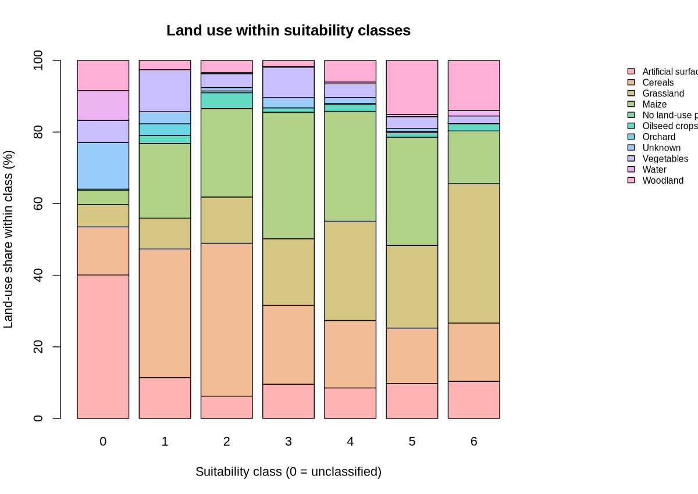
Executed R console output
class landuse area_ha percent_within_class 1 0 Cereals 9.834462e+00 13.437873793 2 0 Grassland 4.578133e+00 6.255591469 3 0 Vegetables 4.510436e+00 6.163089310 4 0 Maize 2.911085e+00 3.977725304 5 0 Woodland 6.155034e+00 8.410279872 6 0 Artificial surfaces 2.932615e+01 40.071439413 7 0 Water 6.092505e+00 8.324838984 8 0 Unknown 9.541566e+00 13.037659202 9 0 No land-use polygon/code 2.352906e-01 0.321502654 10 1 Oilseed crops 6.370410e+00 2.273121888 11 1 Cereals 1.006413e+02 35.911331239 12 1 Grassland 2.413716e+01 8.612744658 13 1 Orchard 9.006142e+00 3.213617277 14 1 Vegetables 3.287781e+01 11.731626463 15 1 Maize 5.849678e+01 20.873116761 16 1 Woodland 7.206310e+00 2.571392246 17 1 Artificial surfaces 3.201178e+01 11.422607219 18 1 Water 7.509328e-03 0.002679517 19 1 Unknown 9.494184e+00 3.387762732 20 2 Oilseed crops 6.545440e+00 4.418673215 21 2 Cereals 6.327742e+01 42.717105656 22 2 Grassland 1.910596e+01 12.897987631 23 2 Orchard 7.309035e-01 0.493415810 24 2 Vegetables 5.717000e+00 3.859412580 25 2 Maize 3.661243e+01 24.716194205 26 2 Woodland 4.936010e+00 3.332184893 27 2 Artificial surfaces 9.228768e+00 6.230124932 28 2 Water 5.531828e-01 0.373440759 29 2 Unknown 1.414212e+00 0.954701320 30 2 No land-use polygon/code 1.001219e-02 0.006758998 31 3 Oilseed crops 4.968548e+00 1.216922954 32 3 Cereals 8.989190e+01 22.016798119 33 3 Grassland 7.594764e+01 18.601496511 34 3 Orchard 4.255185e-02 0.010422023 35 3 Vegetables 3.474490e+01 8.509904151 36 3 Maize 1.443636e+02 35.358283421 37 3 Woodland 7.006020e+00 1.715951265 38 3 Artificial surfaces 3.908526e+01 9.572967961 39 3 Water 6.232696e-01 0.152654468 40 3 Unknown 1.161415e+01 2.844599127 41 4 Oilseed crops 3.374110e+00 1.993983820 42 4 Cereals 3.187654e+01 18.837946014 43 4 Grassland 4.694252e+01 27.741423484 44 4 Orchard 2.928568e-01 0.173068336 45 4 Vegetables 6.455358e+00 3.814895952 46 4 Maize 5.192852e+01 30.687982227 47 4 Woodland 1.020744e+01 6.032249434 48 4 Artificial surfaces 1.443013e+01 8.527712683 49 4 Water 8.760834e-01 0.517735330 50 4 Unknown 2.830964e+00 1.673002720 51 5 Oilseed crops 1.076299e+00 1.232745276 52 5 Cereals 1.352152e+01 15.486951002 53 5 Grassland 2.014211e+01 23.069888210 54 5 Orchard 2.703292e-01 0.309623221 55 5 Vegetables 2.830977e+00 3.242476551 56 5 Maize 2.642974e+01 30.271457772 57 5 Woodland 1.314854e+01 15.059755289 58 5 Artificial surfaces 8.525410e+00 9.764629713 59 5 Water 5.531823e-01 0.633590639 60 5 Unknown 8.109988e-01 0.928882327 61 6 Oilseed crops 8.710516e-01 2.051616719 62 6 Cereals 6.923453e+00 16.307038106 63 6 Grassland 1.652270e+01 38.916462250 64 6 Vegetables 9.036087e-01 2.128299649 65 6 Maize 6.252637e+00 14.727043203 66 6 Woodland 5.944744e+00 14.001851885 67 6 Artificial surfaces 4.400366e+00 10.364328787 68 6 Water 6.382789e-01 1.503359403
The denominator is the area of each suitability class, so each bar sums to 100%. Missing land-use coverage is included explicitly. Woodland or grassland on a constrained soil does not prove that the constraint caused the land use. The classification concerns the generic regional-cropping rules supplied in the TD, not a separate calibrated model for every crop.
9.9 · Export the final map and document decisions
Save the numerical classes and constraints for QGIS, and retain the decoded vector attributes for checking the decision chain.
R code
writeRaster(suitability, "outputs/module-09/cropping-suitability-5m.tif", datatype = "INT1U", overwrite = TRUE)
writeRaster(c(slope_percent, base, texture_penalty, stone), "outputs/module-09/classification-inputs-5m.tif", overwrite = TRUE)
writeVector(soils, "outputs/module-09/decoded-soil-units.gpkg", overwrite = TRUE)
reopened <- rast("outputs/module-09/cropping-suitability-5m.tif")
stopifnot(compareGeom(suitability, reopened), all(values(suitability) == values(reopened), na.rm = TRUE),
all(is.na(values(suitability)) == is.na(values(reopened))))
writeLines(capture.output(sessionInfo()), "outputs/module-09/session-info.txt")
plot(map_classes, col = c("#c7cbd0", class_colours), all_levels = TRUE, main = "Kervidy–Naizin: cropping suitability")
lines(basin, lwd = 1.5)
sbar(1000, type = "bar", below = "1 km", labels = c("", "", ""))Why these functions? · official R help
all()— Require every checked value to satisfy the numerical condition. In R:help("all", package="base")c()— Collect related values, plotting settings or raster layers. In R:help("c", package="base")capture.output()— Capture the R session report for export. In R:help("capture.output", package="utils")compareGeom()— Verify that the reopened GeoTIFF retains the prediction grid. In R:help("compareGeom", package="terra")is.na()— Keep unknown soil descriptions, code-8 uncertainty and raster gaps visible. In R:help("is.na", package="base")lines()— Draw the catchment outline over each map. In R:help("lines", package="graphics")plot()— Display maps, fitted variograms, histograms or validation diagnostics using the relevant class method. In R:help("plot", package="graphics")rast()— Create a 25 m prediction template or reopen an exported GeoTIFF. In R:help("rast", package="terra")sbar()— Draw a 1 km ground-distance scale bar for the projected maps. In R:help("sbar", package="terra")sessionInfo()— Record R and package versions used to produce the results. In R:help("sessionInfo", package="utils")stopifnot()— Stop the analysis when geometry or numerical checks fail. In R:help("stopifnot", package="base")values()— Compare exported and original class values exactly, ignoring missing cells. In R:help("values", package="terra")writeLines()— Save reproducibility information as a text file. In R:help("writeLines", package="base")writeRaster()— Save numerical class codes with their CRS, extent, resolution and missing-value mask. In R:help("writeRaster", package="terra")writeVector()— Export the decoded soil-unit geometries and decision attributes. In R:help("writeVector", package="terra")
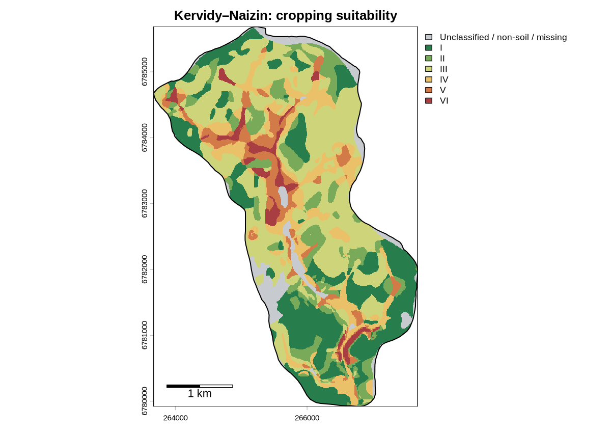
Executed R console output
The final TIFF uses integers I=1 through VI=6; unresolved cells are NoData, while the page renders them grey to make their area visible. writeRaster saves classes with their grid and CRS; writeVector saves the decoded soil-unit attributes. A complete report includes the rules, boundary conventions, missing-data treatment, code-8 sensitivity, areas and land-use proportions. It should distinguish generic modelled suitability from observed yields or ecological value.
Your turn: produce a justified interpretation
- Identify the dominant suitability classes and their area, including unclassified land.
- Distinguish the area affected by a constraint from the area where that constraint was assessed.
- Explain the code-8 uncertainty and the shallow-soil code-3 interpretation.
- Compare grassland, maize and cereals within the suitability classes. State the denominator.
- Explain why 5 m pixels do not establish 5 m soil-mapping accuracy or actual crop yields.
Expected reasoning
Class areas must sum to the catchment raster area when the unclassified category is included. Constraint areas can overlap and should not be added as exclusive categories. Land-use proportions sum to 100% within each class only if missing land-use coverage is accounted for. Hydromorphy code 8 does not supply a numerical onset depth, so its scenarios remain hypotheses. Current land use neither validates the classification nor proves that soil constraints caused a farmer’s decision.